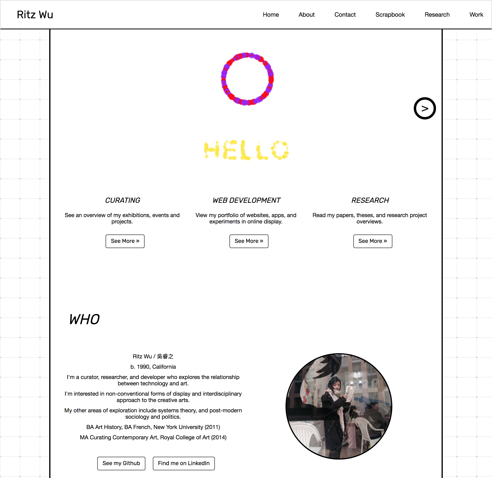

"Me not long ago in front of a very #extra Japanese waterfall."

I'm a curator and arts researcher.
I graduated from New York University (BA) in 2011, and the Royal College of Art (MA) in 2014.
My research is on how technology is changing the way we have aesthetic experiences and think about the visual matter in the world around us.
How can technology provide a new environment for us to share, create, and view art?"
Exploring this question is one of the main reasons I want to study computer programming. One day, I want to invent something great, that helps this to happen.
As an example of the kind of theoretical work I've done in this area - previously, I've written about how the context of making art can be viewed as a self-generating system.
This idea came from my interest in cybernetics and new media, two examples of trends in contemporary art that have developed alongside the internet in the 1990s until today.
For further reference, here's an archive I made documenting projects that use technology to enhance the experience of art.
Why am I applying?
(Hover on the coloured dots.)
My Experience
 |
My Codewars account.I've reached 5 kyu according to the prerequisites and written a kata entitled "A New Era: Japanese Calendar Conversion." Click here to view my CodeWars profile. Click here to view my kata. |
 |
FreeCodeCampAccording to the prerequisites, I've completed the HTML5, CSS, Basic JavaScript, Object Oriented and Functional Programming, and Basic Algorithm Scripting sections. Click here to view my FreeCodeCamp profile. |
|  | ritsu.netMy other portfolio site is Maybe you're interested in having a look? Click here. |
Other Languages, Frameworks, Libraries, etc.Through my online courses and being tutored by friends, I've learned to use a variety of random tools in programming. I know how to use CSS, HTML, Javascript, and some Ruby (although I need to practice). Libraries I'm familiar with include Bootstrap and Redux. Platforms/applications I'm familiar with include Heroku, Ruby on Rails. APIs I'm familiar with include Stripe and Google Maps. Databases I'm familiar with include Redis and PostgreSQL. Frameworks I'm familiar with include Rails and React.JS. Here is the repository for a website I've been making using React.JS. |
Thank you for considering my application. I hope to hear from you soon :)